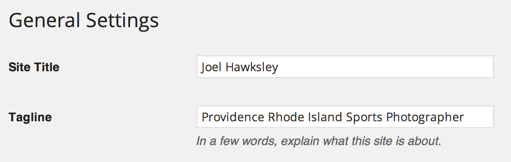
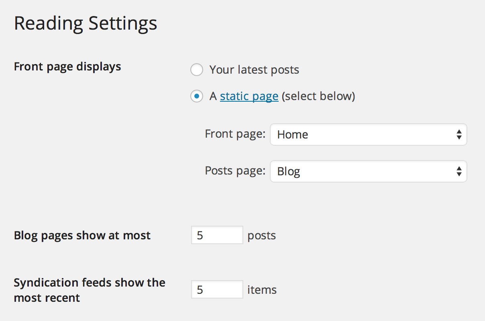

Getting Started
It's best to configure your WordPress installation with the following settings:
Settings: General
Site title
Your name, used in page titles.
Tagline
Short site description, used in page titles.

Settings: Reading
Front page displays
Select Static Page, and choose a page to use as your Front page. Create an empty page named Blog and select it for Posts page.
Blog pages show at most
Five works best in most cases, limiting the number of images loaded.

Settings: Permalinks
Select day and name.